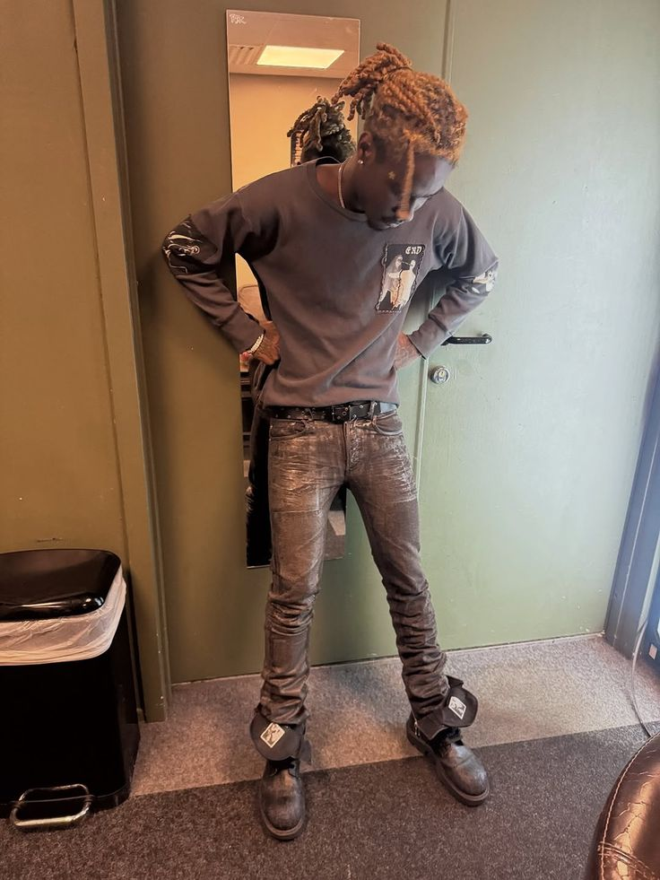

.jpg)
Playboi Carti
EnergyBig inspiration since I was a kid. The appeal is how he can make loud styling still feel effortless.
What I pull from this: fearless layering and stage-presence attitude.
Click to viewThis page is the blueprint behind the fits. It is less about copying looks and more about pulling energy, silhouettes, attitude, and details from people who shaped how I see fashion.
Same dark tone as the rest of the project, but with more personality and context.
Big inspiration since I was a kid. The appeal is how he can make loud styling still feel effortless.
What I pull from this: fearless layering and stage-presence attitude.
Click to view
Always locked in on statement pieces. Even one pair of shoes can shift the whole fit.
What I pull from this: standout footwear and strong proportion choices.
Click to view
The denim and shape language stand out immediately. It is a reminder that the cut matters as much as the item.
What I pull from this: jeans with presence and sharper shape control.
Click to view
Strong enough influence that I dressed up as him for Halloween. The style feels raw in the best way.
What I pull from this: confidence, nostalgia, and not over-polishing everything.
Click to view
Brings personality into fashion instead of treating it like a uniform. It makes the whole thing more fun.
What I pull from this: color, accessories, and letting personal interests show.
Click to view.jpg)
One of the people that really got me into fashion. He can move between clean, tailored, and experimental without losing identity.
What I pull from this: balance between luxury styling and individuality.
Click to view.jpg)
The only streamer I really tap in with. He proves personality can make even simple pieces hit harder.
What I pull from this: casual fits with more presence and character.
Click to view.jpg)
Some people just look expensive without trying too hard. That is the lane that makes this reference stick.
What I pull from this: understated luxury and strong outerwear energy.
Click to view
Older Kanye fits still hold up. There is a lot to study in how simple pieces get elevated through styling.
What I pull from this: muted palettes, layering, and fit-first thinking.
Click to view.jpg)
A different kind of reference point, but the messy accessories and layered texture still hit.
What I pull from this: jewelry, scarves, and outfits that feel collected over time.
Click to view